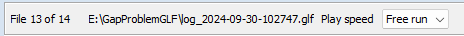
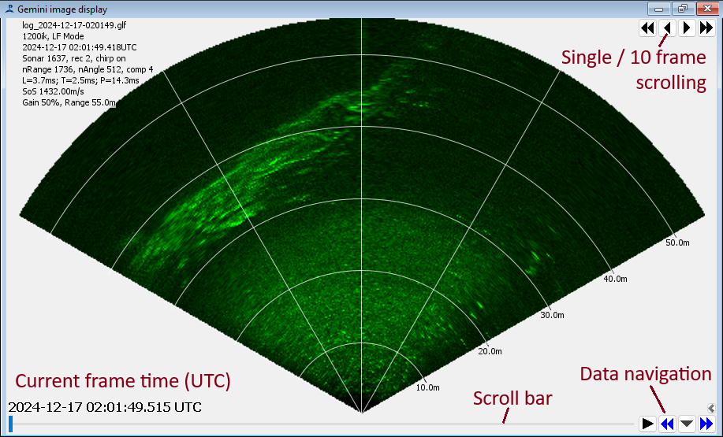
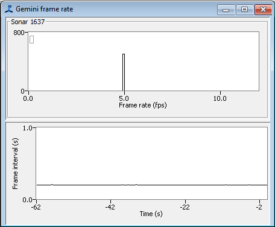
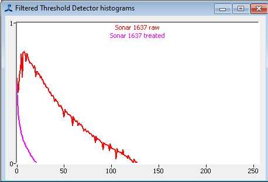

The Tritech modules do not automatically create any displays automatically added to the PAMGuard Graphical User Interface. You should create a new User Display Panel (as you would to add a spectrogram display to PAMGuard) and add display components to the User Display Panel. This allows more flexibility than a standard fixed display format, since you can combine the sonar displays with displays from other modules. e.g. if you were collecting both sonar data and PAM data, you could have a sonar display and a spectrogram display on the same panel.
If multiple sonars are in use, the display will show the image for each sonar separately.
The sonar status is shown in the top left corner. If multiple sonars are in use, this panel will expand to show all devices. The panel can be hidden to give a complete view of the main sonar display using the small button in the top right hand corner.
If your processing data from files, rather than real time acquisition, the status panel will not show and instead a small toolbar at the top of the display will show progress through the file archive. Here you can also select how fast the analysis will proceed. Free run will cause the system to process data as fast as possible. Selecting other speeds can be useful for viewing and demonstrating data as it processes.
Display options are in the bottom right hand corner. These can also be hidden using the small button in the corner of this panel. The main options panel shows options that you might want to change often. Click on the settings cog for further options.
Once hidden, in the same part of the screen as the display options is information about individual frames.
You can zoom in on a region of the sonar image using the mouse scroll wheel.
Right click on the display for options to display detector and other overlays on the display. The options available will depend on which detectors are included in your PAMGuard configuration, and how they are configured.
When using the display in Viewer mode, appearance and available controls will change slightly showing a scroll bar and standard PAMGuard data scrolling tools. An internal map of raw sonar data is created for the time period of the scroller, though raw sonar data is only loaded for a single record at a time.

This display shows a histogram and a scrolling time display of the frame rate. If the frame rate is unstable or is lower than you expected you may have to improve your Ethernet connection to the sonar(s) or accept working at a lower ping rate.
This is part of the detection system, so is only available when the detector module is loaded

The signal levels in the sonar can be adjusted by changing the gain in the Acquisition dialog (note that this is not the same as the gain in the display options panel).
Two lines are shown in the histogram. The 'raw' line is the level of data coming out of the sonar, and the 'treated' line is the level after background subtraction in the detector.
If the gain is too high, the the data will be distorted. On the other hand, if the gain is too low, faint objects may not be visible. Ideally, the signal should use most of the dynamic range of the system. Ideally, the raw data should fill most of the dynamic range of the system - so in the example here, where the raw data levels reach a value of about 130 (out maximum of 255) it might be possible to increase the gain slightly.